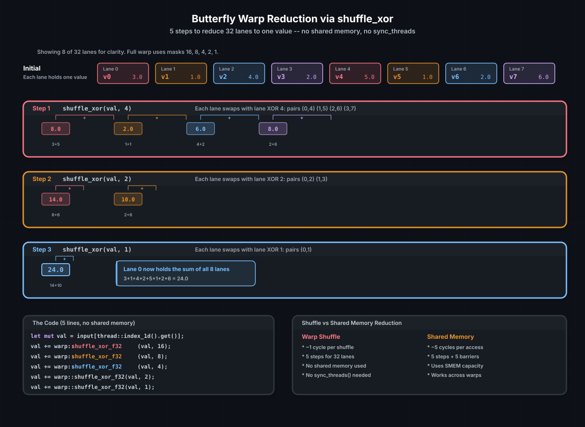

Warp-Level Programming#
A warp is CUDA's fundamental scheduling unit: 32 threads that execute in lockstep on the same SM. Because all 32 threads share an instruction pointer, they can exchange data directly through warp shuffle instructions — register-to-register transfers that cost roughly one cycle and require no shared memory, no barriers, and no synchronization.
cuda-oxide exposes the full warp intrinsic set through cuda_device::warp.
This chapter covers shuffle, vote, and the patterns they unlock: warp
reductions, broadcasts, scans, and ballot-based filtering.
参见
CUDA Programming Guide — Warp Shuffle Functions for PTX encoding details and the full set of width variants.
Lane and warp identity#
Every thread in a block has a lane ID (0–31) within its warp:
use cuda_device::warp;
let lane = warp::lane_id(); // 0..31, hardware register %laneid
let warp = warp::warp_id(); // threadIdx.x / 32
warp_id() is derived from threadIdx.x / 32. For multi-dimensional
blocks, this only accounts for the x dimension — which is usually fine,
since most kernels that care about lane identity use 1D blocks.
Shuffle: register-to-register data exchange#
The four shuffle variants let a thread read another thread's register without going through memory:
Function |
What it does |
Source lane |
|---|---|---|
|
Read from a specific lane |
|
|
Read from |
|
|
Read from |
|
|
Read from |
|
Each variant exists for both u32 and f32:
let partner_val = warp::shuffle_xor_f32(my_val, 1);
let broadcast = warp::shuffle_f32(my_val, 0); // lane 0's value to all
let neighbor = warp::shuffle_down_f32(my_val, 1); // next lane's value
All shuffles are warp-synchronous — they implicitly synchronize the
warp. No sync_threads() is needed, and in fact calling sync_threads()
inside a shuffle pattern would be both unnecessary and wasteful.
Warp reduction#
The most common shuffle pattern is a butterfly reduction: in ⌈log₂(32)⌉ = 5 steps, every lane accumulates the sum (or min, max, etc.) of all 32 values. No shared memory, no barriers, five instructions.
{kind=link}

Butterfly reduction using shuffle_xor. At each step, lanes exchange
values with their XOR partner and add. After 5 steps (masks 16, 8, 4, 2,
1), lane 0 holds the sum of all 32 values.#
use cuda_device::warp;
fn warp_reduce_sum(mut val: f32) -> f32 {
val += warp::shuffle_xor_f32(val, 16);
val += warp::shuffle_xor_f32(val, 8);
val += warp::shuffle_xor_f32(val, 4);
val += warp::shuffle_xor_f32(val, 2);
val += warp::shuffle_xor_f32(val, 1);
val
}
After the reduction, all 32 lanes hold the sum (because XOR is
symmetric — both partners accumulate). If you only need the result in
lane 0, you can use shuffle_down instead:
fn warp_reduce_sum_lane0(mut val: f32) -> f32 {
val += warp::shuffle_down_f32(val, 16);
val += warp::shuffle_down_f32(val, 8);
val += warp::shuffle_down_f32(val, 4);
val += warp::shuffle_down_f32(val, 2);
val += warp::shuffle_down_f32(val, 1);
val
}
With shuffle_down, only lane 0 holds the correct result — the others
hold partial sums. This is fine when only lane 0 writes the output.
小技巧
Need a block-wide reduction? Reduce within each warp using shuffles, write
the 32 per-warp results to shared memory, sync_threads(), then reduce
the warp-level results with one final warp. This hybrid approach is faster
than a pure shared memory tree because it eliminates 5 levels of barriers.
Broadcast#
Broadcasting lane 0's value to all lanes is a single shuffle:
let leader_val = warp::shuffle_f32(my_val, 0);
Any lane can be the source. This replaces the shared-memory pattern of "lane 0 writes to shared, sync, all lanes read" — one instruction instead of three operations.
Inclusive prefix sum (scan)#
An inclusive scan computes a running total: lane i holds the sum of
values from lanes 0 through i. The pattern uses shuffle_up:
fn warp_inclusive_scan(mut val: f32) -> f32 {
let mut offset = 1u32;
while offset < 32 {
let n = warp::shuffle_up_f32(val, offset);
if warp::lane_id() >= offset {
val += n;
}
offset *= 2;
}
val
}
After 5 steps, each lane holds the prefix sum up to and including its own value. This is the building block for stream compaction, histogram building, and parallel scan algorithms.
Vote: warp-wide predicates#
Vote operations let the warp collectively evaluate a boolean condition:
Function |
Returns |
|---|---|
|
|
|
|
|
A |
|
Population count: how many active lanes have |
Filtering with ballot#
A common pattern is to compact an array, keeping only elements that pass
a predicate. ballot + popc gives you the count and the per-lane write
offset:
use cuda_device::{kernel, thread, warp, DisjointSlice};
#[kernel]
pub fn compact_positive(
input: &[f32],
mut output: DisjointSlice<f32>,
mut count: DisjointSlice<u32>,
) {
let idx = thread::index_1d();
let val = input[idx.get()];
let is_positive = val > 0.0;
let mask = warp::ballot(is_positive);
let lane = warp::lane_id();
// Count bits below this lane to get the write position
let offset = (mask & ((1u32 << lane) - 1)).count_ones();
if is_positive {
unsafe {
*output.get_unchecked_mut(offset as usize) = val;
}
}
// Lane 0 records total count for this warp
if lane == 0 {
unsafe {
*count.get_unchecked_mut(warp::warp_id() as usize) = mask.count_ones();
}
}
}
The ballot mask encodes the entire warp's predicate result in one
register. No communication, no shared memory — the hardware computes it in
a single cycle.
A complete example: warp-level dot product#
Putting shuffles and votes together, here is a kernel that computes the dot product of two vectors using warp reduction:
use cuda_device::{kernel, thread, warp, DisjointSlice};
#[kernel]
pub fn warp_dot_product(
a: &[f32],
b: &[f32],
n: u32,
mut result: DisjointSlice<f32>,
) {
let idx = thread::index_1d();
// Each thread computes one element of the pointwise product
let product = if idx.get() < n as usize {
a[idx.get()] * b[idx.get()]
} else {
0.0f32
};
// Warp-level reduction
let mut sum = product;
sum += warp::shuffle_xor_f32(sum, 16);
sum += warp::shuffle_xor_f32(sum, 8);
sum += warp::shuffle_xor_f32(sum, 4);
sum += warp::shuffle_xor_f32(sum, 2);
sum += warp::shuffle_xor_f32(sum, 1);
// Lane 0 of each warp writes its partial sum
if warp::lane_id() == 0 {
unsafe {
*result.get_unchecked_mut(warp::warp_id() as usize) = sum;
}
}
}
For a full dot product, launch a second pass that reduces the per-warp results — either with another warp kernel or with atomics. The first pass eliminates the vast majority of the work using only register shuffles.
参见
Shared Memory and Synchronization — the block-wide counterpart for larger-than-warp operations
Tensor Memory Accelerator — hardware that accelerates the global→shared data movement that feeds these patterns